cosnova x Plastic for Change
DANKE FÜR DEIN INTERESSE AM THEMA RECYCLING UND PLASTIK!
cosnova fördert Recycling von Plastikmüll
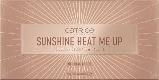
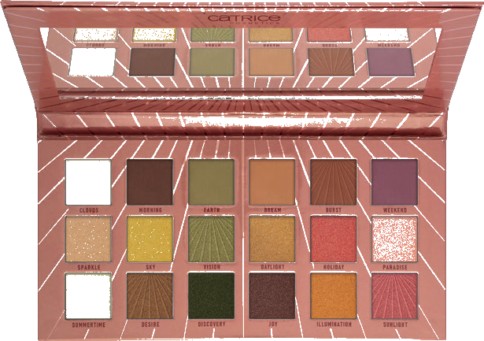
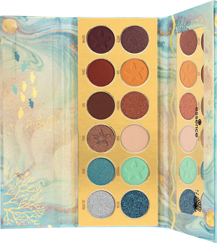
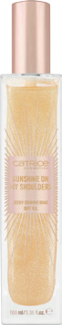
 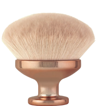
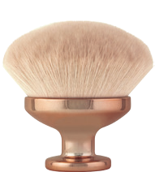
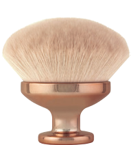
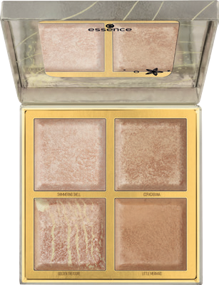
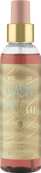
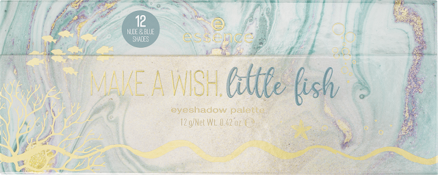
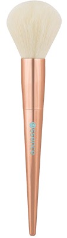
Im Rahmen dieser Limited Edition „TANsation“ unterstützt cosnova, das Unternehmen hinter essence und CATRICE , die Organisation Plastics For Change mit einer Spende über 35.000 US-Dollar. Seit Anfang 2020 baut Plastics For Change mit diesem Geld zwei Sammelzentren für Plastikmüll in Indien aus. Ziel der Zusammenarbeit ist es, achtlos entsorgtes, aber noch nutzbares Plastik zu recyceln und als sogenanntes Rezyklat weiterzuverwenden. Die Zusammenarbeit mit Plastics For Change liegt cosnova besonders am Herzen, da die Kooperation nicht nur einen wichtigen Beitrag zum Umweltschutz leistet, sondern den indischen Arbeiterinnen und Arbeitern auch eine nachhaltige Existenzgrundlage bietet.
Spende über
35.000 US$
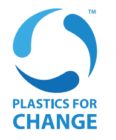
RECYCLING PROCESS
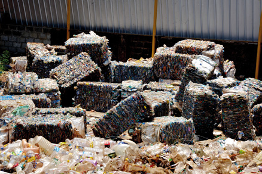
COLLECTION
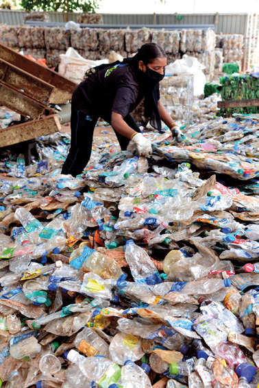
SEGREGATION
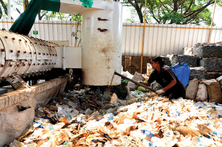
LABEL
REMOVING
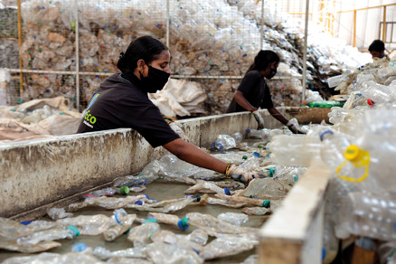
QUALITY
CHECKS
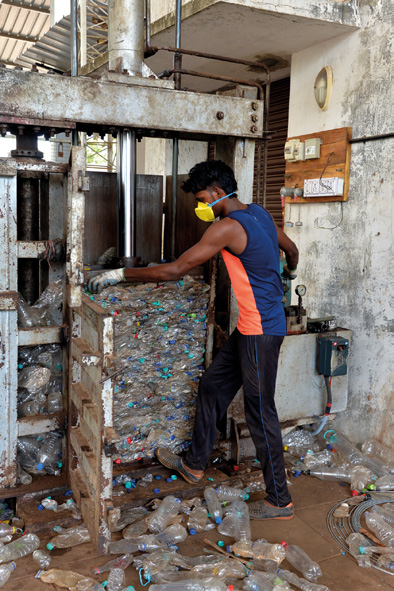
BALING &
DISPATCH
Als Kosmetikunternehmen übernehmen wir Verantwortung, denn unser wunderschöner Planet und die Menschen, die auf ihm Leben, liegen uns sehr am Herzen. Darum möchten wir Ressourcen schonen, die Umwelt schützen und zur Reduktion der Müllberge beitragen.
Konkret bedeutet das:
… , dass wir den Anteil an Neu-Plastik in den Umverpackungen unserer Kosmetikprodukte sukzessive reduzieren. Unser Ziel: bis 2025 mindestens 50 Prozent unserer Verpackungen aus recyceltem Material herstellen.
… , dass wir unsere Verpackungen recyclingfähig designen – und zwar bis zu 75 Prozent bis 2025.
… , dass wir generell weniger Material für unsere Verpackungen verwenden. Unser Bestreben: 30 Prozent weniger Verpackungsmaterial bis 2025.
Ziele bis
2025
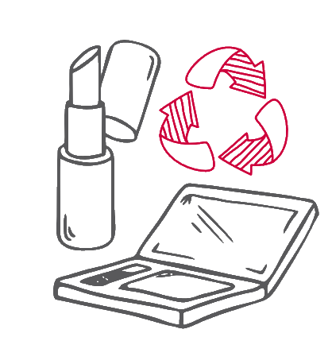
Übrigens: Auch bei der Herstellung des TANsation-Packagings von essence und CATRICE wurde deutlich weniger Neu-Plastik verwendet, so kommt z.B. die Verpackung des so kommt z.B. die Verpackung des CATRICE Bronzing Babe Of The Dunes Maxi Baked Bronzing Powders Face & Body so kommt z.B. die Verpackung des mit 95 Prozent weniger „Virgin Plastics“ aus.*

* im Vergleich zu derselben Verpackung, wenn sie vollständig aus Plastik besteht.